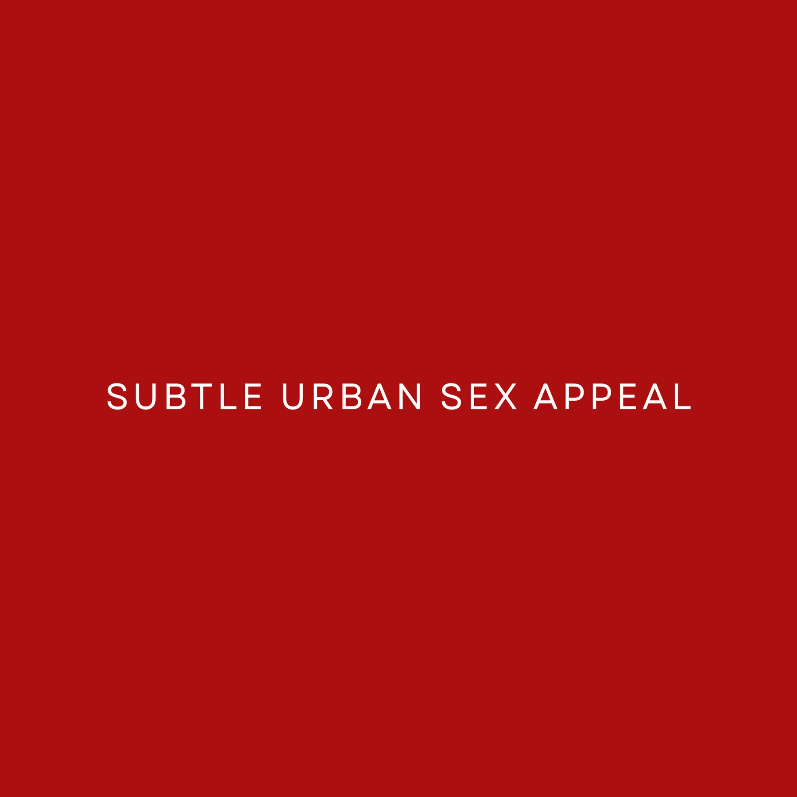
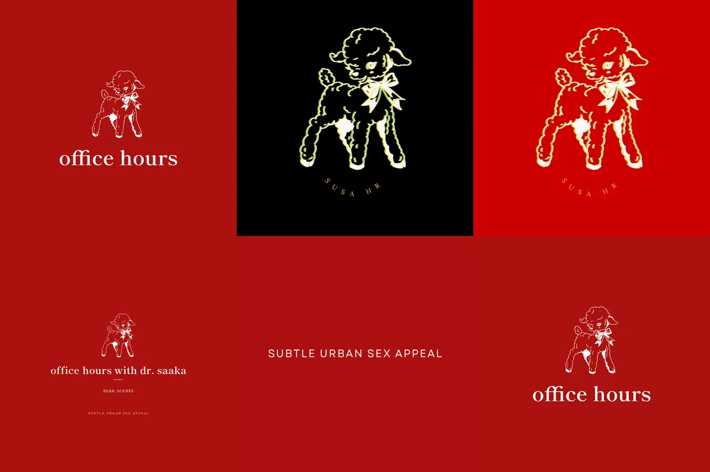

susa
A podcast on philosophy, culture and sound design, with 180 episodes.
- Role
- Host
- Place
- Online
- Dates
- Nov 2023 to present
- Disciplines
- Hosting, Audio production, Sound design, Guest curation

The brief
Subtle Urban Sex Appeal (SUSA) is the podcast I host. The show covers philosophy, culture and sound design.
SUSA is made and published entirely online: on YouTube, on Substack, and on Apple Podcasts and Spotify. The catalog runs on two tracks: full episodes and two recurring series, SUSA HR and Office Hours.
What I did
Hosting
Host the show, with guests including Asha David, Taylor DeClue, Lindsey Blohan and Desi Lamour.
Sound design
Sound design is one of the show's three subjects, and I bring the ear I use on runway and club work.
Series design
Run two recurring series alongside the main feed.
Results
- 180
- episodes published
- 4.9
- Apple Podcasts rating, from 189 ratings
- 4.5
- Spotify rating, from 330 ratings
- 2
- recurring series

Online
Recent episodes
- 180You're Fired!Nov 20, 2026
- 176ASHANATORS w/ Asha DavidNov 5, 2026
- 133Dominique Morgan + The Okra ProjectMay 14, 2026
- 115Age of AquariusFeb 7, 2026